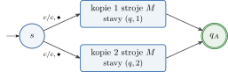
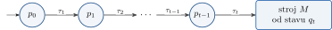
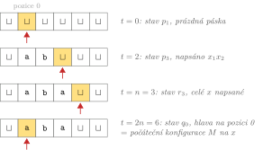

5.4 Úlohy navíc¶
Úlohy procvičují typy úloh zápočtového testu, které jdou řešit látkou této kapitoly: důkaz NP-úplnosti redukcí (úloha 4 testu) a rozhodnutí, zda je daná funkce polynomiální redukcí (definice 5.1, oddíl 5.2). Jediný NP-úplný problém, který zatím známe, je \(\href{ch-redukce-np-tezkost-a-np-uplnost.html#prob-unp}{\class{woo-pk-prob-unp}{\prob{UNP}}}\) (oddíl 5.2.1), takže se redukuje z něj; cílové instance jsou upravené stroje. K tomu jedna self-redukce (úloha 2 testu): nalezení přijímající větve pomocí orákula pro \(\href{ch-redukce-np-tezkost-a-np-uplnost.html#prob-unp}{\class{woo-pk-prob-unp}{\prob{UNP}}}\). Kromě \(\href{ch-redukce-np-tezkost-a-np-uplnost.html#prob-unp}{\class{woo-pk-prob-unp}{\prob{UNP}}}\) se používá jen problém zastavení z kapitoly 2.
Neoficiální úlohy
Úlohy v tomto oddílu nejsou oficiální zadání předmětu. Jsou to procvičovací úlohy navíc k látce kapitoly; kandidátní funkce z úlohy 5.1 byly prověřeny programem na všech slovech délky nejvýše 12. Redukce z úloh 5.2, 5.4, 5.6 a 5.7 jsme ověřili na 2000–4000 náhodných malých nedeterministických strojích (odpověď \(\href{ch-redukce-np-tezkost-a-np-uplnost.html#prob-unp}{\class{woo-pk-prob-unp}{\prob{UNP}}}\) hrubou silou přes všechny větve), algoritmus z úlohy 5.3 se simulovaným orákulem na 3000 náhodných instancích a protipříklady z úlohy 5.5 simulací; ostatní části jsou důkazy přepočítané ručně.
5.4.1 Rozcvička¶
Úloha 5.1 (je to redukce?)
Pro každou trojici rozhodněte, zda je funkce \(f\) polynomiální redukcí \(L\mathrel{\href{ch-redukce-jak-porovnat-slozitost-dvou-problemu.html#def-redukce}{\class{woo-pk-def-redukce}{\redp}}} Q\) (definice 5.1). Ověřte obě podmínky definice; pokud některá neplatí, uveďte protipříklad. Všechny jazyky jsou nad abecedou \(\{0,1\}\), \(\#_1(w)\) je počet jedniček ve slově \(w\) a \(N(w)\) je číslo, které slovo \(w\) zapisuje binárně (\(N(\varepsilon)=0\), úvodní nuly jsou dovolené).
- \(L=\{w\mid \#_1(w)\text{ je sudé}\}\), \(Q=\{1^m\mid m\text{ je sudé}\}\), \(f(w)=1^{\#_1(w)}\).
- \(L=\{w\mid N(w)\text{ je sudé}\}\), \(Q=\{1^m\mid m\text{ je sudé}\}\), \(f(w)=1^{N(w)}\).
- \(L=\{w\mid \#_1(w)\text{ je sudé}\}\), \(Q=\{w\mid |w|\text{ je sudé}\}\), \(f(w)=w\).
- \(L=\{w\mid \#_1(w)\text{ je sudé}\}\), \(Q=\{00\}\), \(f(w)=00\) pro \(\#_1(w)\) sudé a \(f(w)=1\) jinak.
Řešení
Kontrolujeme dvě věci: (1) \(f\) je spočitatelná deterministickým TS v polynomiálním čase, (2) pro každé \(w\) platí \(w\in L\iff f(w)\in Q\).
(a) Ano. (1) Stroj projde vstup jednou zleva doprava a za každou přečtenou jedničku zapíše na výstup jednu jedničku: \(O(n)\) kroků, \(|f(w)|=\#_1(w)\le n\). (2) \(f(w)=1^{\#_1(w)}\in Q\iff \#_1(w)\) je sudé \(\iff w\in L\). Řetěz ekvivalencí dává oba směry naráz.
(b) Ne. Podmínka (2) platí: \(f(w)\in Q\iff N(w)\) je sudé \(\iff w\in L\). Neplatí ale podmínka (1): výstup má délku \(N(w)\) a pro \(w=1^n\) je \(N(w)=2^n-1\). Stroj zapíše za jeden krok nejvýše jeden symbol, takže jen vypsání \(f(w)\) trvá aspoň \(2^n-1\) kroků – exponenciálně vzhledem k \(n=|w|\). (Pro \(|w|=12\) je to až \(4095\) symbolů.) Pozor: otázka zní, zda je redukcí tato \(f\). Samotné \(L\mathrel{\href{ch-redukce-jak-porovnat-slozitost-dvou-problemu.html#def-redukce}{\class{woo-pk-def-redukce}{\redp}}} Q\) platí, jen jinou funkcí, např. \(g(w)=\varepsilon\) (\(=1^0\in Q\)) pro \(w=\varepsilon\) nebo \(w\) končící nulou a \(g(w)=1\) jinak.
(c) Ne. Podmínka (1) platí (stroj jen opíše vstup), podmínka (2) ne, a to v obou směrech:
- \(w=0\): \(\#_1(0)=0\) je sudé, tedy \(0\in L\), ale \(|0|=1\) je liché, \(f(0)\notin Q\) (porušeno „\(\Rightarrow\)“);
- \(w=01\): \(\#_1(01)=1\), tedy \(01\notin L\), ale \(|01|=2\), \(f(01)\in Q\) (porušeno „\(\Leftarrow\)“).
K vyvrácení stačí jediný protipříklad; obr. níže ukazuje oba.

Funkce \(f(w)=w\) z bodu (c): \(L\) jsou slova se sudým počtem jedniček, \(Q\) slova sudé délky. Zelené šipky jsou v pořádku, červené čárkované porušují podmínku (2): \(0\) vede z \(L\) mimo \(Q\), \(01\) vede zvenku \(L\) do \(Q\).
(d) Ano. (1) Jedním průchodem stroj spočítá paritu počtu jedniček (\(O(n)\) kroků) a zapíše dva nebo jeden symbol. (2) Pro \(w\in L\) je \(f(w)=00\in Q\), pro \(w\notin L\) je \(f(w)=1\notin Q\). Redukce instanci rovnou vyřeší a vypíše pevnou ANO- nebo NE-instanci (obr. 5.4). To jde jen proto, že \(L\in\href{../ch-cas/ch-cas-tridy-p-a-exp.html#def-tridy}{\class{woo-pk-def-tridy}{\PP}}\); u jazyka, o kterém nevíme, že je v \(\href{../ch-cas/ch-cas-tridy-p-a-exp.html#def-tridy}{\class{woo-pk-def-tridy}{\PP}}\), takovou \(f\) v polynomiálním čase spočítat neumíme (viz úloha 5.5 (f)).
Úloha 5.2 (UNP se dvěma přijímajícími větvemi)
Problém \(\href{ch-redukce-np-tezkost-a-np-uplnost.html#prob-unp}{\class{woo-pk-prob-unp}{\prob{UNP}}}_{\ge2}\):
Vstup: kód NDTS \(M\), slovo \(x\) a číslo \(k\) zapsané unárně, \(\enc{M,x,1^k}\) (jako u \(\href{ch-redukce-np-tezkost-a-np-uplnost.html#prob-unp}{\class{woo-pk-prob-unp}{\prob{UNP}}}\)).
Otázka: má \(M\) na \(x\) aspoň dvě různé přijímající větve délky nejvýše \(k\)? (Větve jsou různé, liší-li se posloupností použitých přechodů.)
Dokažte, že \(\href{ch-redukce-np-tezkost-a-np-uplnost.html#prob-unp}{\class{woo-pk-prob-unp}{\prob{UNP}}}_{\ge2}\) je NP-úplný.
Řešení
Redukce: \(\href{ch-redukce-np-tezkost-a-np-uplnost.html#prob-unp}{\class{woo-pk-prob-unp}{\prob{UNP}}} \mathrel{\href{ch-redukce-jak-porovnat-slozitost-dvou-problemu.html#def-redukce}{\class{woo-pk-def-redukce}{\redp}}} \href{ch-redukce-np-tezkost-a-np-uplnost.html#prob-unp}{\class{woo-pk-prob-unp}{\prob{UNP}}}_{\ge2}\), instance \(\enc{M,x,1^k}\) \(\mapsto\) \(\enc{M_2,x,1^{k+1}}\), kde \(M_2\) obsahuje dvě kopie stroje \(M\) a v prvním kroku si jednu vybere.
1. \(\href{ch-redukce-np-tezkost-a-np-uplnost.html#prob-unp}{\class{woo-pk-prob-unp}{\prob{UNP}}}_{\ge2}\) je v \(\href{../ch-np/ch-np-tridy-nedeterministicke-casove-slozitosti.html#def-ntime}{\class{woo-pk-def-ntime}{\NP}}\). Certifikát je dvojice různých posloupností přechodů \(\pi_1\neq\pi_2\), každá délky nejvýše \(k\). Verifikátor pro každou z nich odsimuluje \(M\) na \(x\): zkontroluje, že další přechod z posloupnosti jde v aktuální konfiguraci použít (souhlasí stav i čtené symboly), provede ho a na konci ověří stav \(\qA\). Certifikát má délku \(O(k\cdot|\enc M|)\) a simulace \(O(k)\) kroků po \(\mathrm{poly}(|\enc M|)\) – protože je \(k\) zapsané unárně, je obojí polynomiální v délce vstupu.
2. Konstrukce. Neplatný vstup zobrazíme na pevnou NE-instanci (stroj s počátečním stavem \(\qR\)). Je-li počáteční stav \(q_0=\qA\) (stroj přijme po 0 krocích), vypíšeme pevnou ANO-instanci, např. stroj s přechody \((s,\blank)\to(\qA,\blank,\Stay)\) a \((s,\blank)\to(\qA,\blank,\Rgt)\) na prázdném slově s \(k=1\). Jinak sestrojíme \(M_2\):
- každý stav \(q\notin\{\qA,\qR\}\) stroje \(M\) zdvojíme na \((q,1)\) a \((q,2)\), stavy \(\qA\), \(\qR\) jsou společné (píšeme \((\qA,i)=\qA\), \((\qR,i)=\qR\));
- každý přechod \((q,c)\to(q',c',D)\) stroje \(M\) dá dva přechody \(((q,i),c)\to((q',i),c',D)\) pro \(i=1,2\);
- nový počáteční stav \(s\) a pro každý symbol \(c\in G\) dva přechody \((s,c)\to((q_0,1),c,\Stay)\) a \((s,c)\to((q_0,2),c,\Stay)\). (U vícepáskového \(M\) čte \(s\) \(n\)-tici \((c,\blank,\dots,\blank)\) – ostatní pásky jsou na začátku prázdné, stačí tedy zase \(2|G|\) přechodů.)
Výstup je \(\enc{M_2,x,1^{k+1}}\).

Stroj \(M_2\): první krok jen vybere kopii, pak kopie dělá přesně totéž co \(M\). Každá přijímající větev \(M\) tak dá dvě přijímající větve \(M_2\) o krok delší.
3. Polynomialita. \(M_2\) má \(2(|Q|-2)+3=2|Q|-1\) stavů a \(2|\delta|+2|G|\) přechodů; redukce projde seznam přechodů jednou a připíše k němu kopii a počáteční přechody. Unární číslo se prodlouží o jeden symbol. Čas lineární.
Pozorování. Větve \(M_2\) jsou přesně dvojice (volba kopie \(i\), větev \(\beta\) stroje \(M\)): po prvním kroku je \(M_2\) ve stavu \((q_0,i)\) se stejnou páskou, jako má \(M\) na začátku, a dál používá přechody kopie \(i\), které odpovídají přechodům \(M\) jedna ku jedné. Větev \((i,\beta)\) má délku \(|\beta|+1\) a přijme, právě když přijme \(\beta\).
4. (\(\Rightarrow\)) Přijme-li \(M\) slovo \(x\) větví \(\beta\) délky \(t\le k\), má \(M_2\) přijímající větve \((1,\beta)\) a \((2,\beta)\) délky \(t+1\le k+1\). Liší se hned v prvním přechodu, takže jsou různé: \(\enc{M_2,x,1^{k+1}}\in\href{ch-redukce-np-tezkost-a-np-uplnost.html#prob-unp}{\class{woo-pk-prob-unp}{\prob{UNP}}}_{\ge2}\). (Pro \(q_0=\qA\) jsme vypsali ANO-instanci.)
5. (\(\Leftarrow\)) Má-li \(M_2\) na \(x\) aspoň dvě přijímající větve délky nejvýše \(k+1\), má aspoň jednu, a ta je tvaru \((i,\beta)\) s přijímající větví \(\beta\) stroje \(M\) délky nejvýše \(k\). Tedy \(\enc{M,x,1^k}\in\href{ch-redukce-np-tezkost-a-np-uplnost.html#prob-unp}{\class{woo-pk-prob-unp}{\prob{UNP}}}\).
6. Závěr. \(\href{ch-redukce-np-tezkost-a-np-uplnost.html#prob-unp}{\class{woo-pk-prob-unp}{\prob{UNP}}}\) je NP-úplný (věta 5.6) a \(\href{ch-redukce-np-tezkost-a-np-uplnost.html#prob-unp}{\class{woo-pk-prob-unp}{\prob{UNP}}}\mathrel{\href{ch-redukce-jak-porovnat-slozitost-dvou-problemu.html#def-redukce}{\class{woo-pk-def-redukce}{\redp}}}\href{ch-redukce-np-tezkost-a-np-uplnost.html#prob-unp}{\class{woo-pk-prob-unp}{\prob{UNP}}}_{\ge2}\), tedy \(\href{ch-redukce-np-tezkost-a-np-uplnost.html#prob-unp}{\class{woo-pk-prob-unp}{\prob{UNP}}}_{\ge2}\) je NP-těžký; s bodem 1 je NP-úplný. Proč nestačí identita: stroj \(M_1\) s přechody \((q_0,c)\to(\qA,c,\Stay)\) přijme slovo \(a\) jedinou větví, takže \(\enc{M_1,a,1^1}\) je ANO-instance \(\href{ch-redukce-np-tezkost-a-np-uplnost.html#prob-unp}{\class{woo-pk-prob-unp}{\prob{UNP}}}\), ale NE-instance \(\href{ch-redukce-np-tezkost-a-np-uplnost.html#prob-unp}{\class{woo-pk-prob-unp}{\prob{UNP}}}_{\ge2}\).
5.4.2 Základní úlohy¶
Úloha 5.3 (přijímající větev z orákula pro UNP)
Máte k dispozici orákulum, které v jednom kroku rozhodne libovolnou instanci \(\href{ch-redukce-np-tezkost-a-np-uplnost.html#prob-unp}{\class{woo-pk-prob-unp}{\prob{UNP}}}\). Navrhněte algoritmus, který pro vstup \(\enc{M,x,1^k}\) najde přijímající větev stroje \(M\) na \(x\) délky nejvýše \(k\) (jako posloupnost použitých přechodů), nebo oznámí, že žádná není. Zdůvodněte správnost a odhadněte počet dotazů vzhledem ke \(k\) a k číslu \(d\) – největšímu počtu přechodů stroje \(M\) pro jednu dvojici (stav, čtené symboly).
Řešení
Redukce s orákulem: \(\href{ch-redukce-np-tezkost-a-np-uplnost.html#prob-unp}{\class{woo-pk-prob-unp}{\prob{UNP}}}\) – nalezení přijímající větve \(\to\) \(\href{ch-redukce-np-tezkost-a-np-uplnost.html#prob-unp}{\class{woo-pk-prob-unp}{\prob{UNP}}}\) – rozhodovací verze. Jak: větev stavíme krok po kroku; o každém kandidátovi na další přechod se zeptáme na stroj, kterému začátek výpočtu vnutíme.
Stroj s vynuceným začátkem. Nechť \(\pi=(\tau_1,\dots,\tau_t)\) je posloupnost přechodů, které jdou na \(x\) jeden po druhém použít, a \(\tau_r\) je přechod \((q_{r-1},a_r)\to(q_r,b_r,D_r)\) (\(a_r\), \(b_r\), \(D_r\) jsou u vícepáskového stroje \(n\)-tice). Stroj \(M_\pi\) vznikne z \(M\) přidáním nových stavů \(p_0,\dots,p_{t-1}\) s počátečním stavem \(p_0\) a přechody
Každý stav \(p_r\) má jediný přechod, takže prvních \(t\) kroků \(M_\pi\) přesně zopakuje \(\pi\); pak je \(M_\pi\) ve stavu \(q_t\) stroje \(M\) se stejnou páskou a dál se chová jako \(M\). Proto
Pro \(\pi=()\) je \(M_\pi=M\).

Stroj \(M_\pi\): řetízek nových stavů vynutí prvních \(t\) přechodů, pak pokračuje volně jako \(M\).
Algoritmus.
- Zeptej se na \(\enc{M,x,1^k}\). Při \(\NE\) přijímající větev neexistuje – konec.
- \(\pi:=()\), \(C:=\) počáteční konfigurace \(M\) na \(x\). Dokud stav konfigurace \(C\) není \(\qA\): nechť \(\tau^1,\dots,\tau^r\) jsou přechody \(M\), které jdou v \(C\) použít. Pro \(j=1,\dots,r-1\) se zeptej na \(\enc{M_{\pi\tau^j},x,1^k}\); při první odpovědi \(\ANO\) zvol \(\tau:=\tau^j\). Odpoví-li všech \(r-1\) dotazů \(\NE\), zvol \(\tau:=\tau^r\) bez ptaní. Polož \(\pi:=\pi\tau\) a \(C:=\) konfigurace po použití \(\tau\).
- Vydej \(\pi\).
Invariant: \(M\) má na \(x\) přijímající větev délky nejvýše \(k\), která začíná \(\pi\). Na začátku platí podle prvního dotazu. Platí-li před průchodem cyklem, pokračuje tato větev za \(\pi\) některým z přechodů \(\tau^1,\dots,\tau^r\) (konfigurace \(C\) není koncová a nějaký přechod v ní existuje, jinak by větev skončila). Zvolený přechod \(\tau\) je buď potvrzený orákulem, nebo je to \(\tau^r\) ve chvíli, kdy žádný z ostatních neprošel – pak větev musí pokračovat právě jím. Invariant tedy platí i pro \(\pi\tau\).
Konec a správnost. Každý průchod cyklem prodlouží \(\pi\) o jeden přechod a podle invariantu je \(|\pi|\le k\), takže cyklus proběhne nejvýše \(k\)-krát. Skončí ve chvíli, kdy je \(M\) po \(\pi\) ve stavu \(\qA\) – vydané \(\pi\) je tedy přijímající větev délky nejvýše \(k\).
Počet dotazů: nejvýše \(1+k(d-1)\), protože v každém z nejvýše \(k\) průchodů se ptáme nejvýše na \(r-1\le d-1\) přechodů. Délka vstupu \(N\) je aspoň \(k\) (unární zápis) i aspoň \(d\) (přechody jsou vypsané v kódu \(M\)), takže dotazů je \(O(N^2)\). Každý dotaz je velký \(O(|\enc M|+k\cdot|\enc M|)\) a simulace konfigurace \(C\) je polynomiální, celý algoritmus je tedy polynomiální vzhledem k \(N\). Pozor: kdyby bylo \(k\) binárně, mohla by větev být exponenciálně dlouhá a počet dotazů by polynomiální nebyl.
Úloha 5.4 (UNP pro stroje s binárním větvením)
Problém \(\href{ch-redukce-np-tezkost-a-np-uplnost.html#prob-unp}{\class{woo-pk-prob-unp}{\prob{UNP}}}_2\):
Vstup: \(\enc{M,x,1^k}\) jako u \(\href{ch-redukce-np-tezkost-a-np-uplnost.html#prob-unp}{\class{woo-pk-prob-unp}{\prob{UNP}}}\), kde NDTS \(M\) má pro každý stav a každou čtenou \(n\)-tici symbolů nejvýše dva přechody. (Vstup, který tuto podmínku nesplňuje, je NE-instance.)
Otázka: přijme \(M\) slovo \(x\) během nejvýše \(k\) kroků?
Dokažte, že \(\href{ch-redukce-np-tezkost-a-np-uplnost.html#prob-unp}{\class{woo-pk-prob-unp}{\prob{UNP}}}_2\) je NP-úplný. Nápověda: volbu z \(d\) možností nahraďte několika volbami ze dvou.
Řešení
Redukce: \(\href{ch-redukce-np-tezkost-a-np-uplnost.html#prob-unp}{\class{woo-pk-prob-unp}{\prob{UNP}}} \mathrel{\href{ch-redukce-jak-porovnat-slozitost-dvou-problemu.html#def-redukce}{\class{woo-pk-def-redukce}{\redp}}} \href{ch-redukce-np-tezkost-a-np-uplnost.html#prob-unp}{\class{woo-pk-prob-unp}{\prob{UNP}}}_2\), instance \(\enc{M,x,1^k}\) \(\mapsto\) \(\enc{M',x,1^{kL}}\), kde \(L=\max(1,\lceil\log_2 d\rceil)\) a \(M'\) rozloží každý krok \(M\) na \(L\) kroků, z nichž prvních \(L-1\) jen vybírá cestu v binárním stromu.
1. \(\href{ch-redukce-np-tezkost-a-np-uplnost.html#prob-unp}{\class{woo-pk-prob-unp}{\prob{UNP}}}_2\) je v \(\href{../ch-np/ch-np-tridy-nedeterministicke-casove-slozitosti.html#def-ntime}{\class{woo-pk-def-ntime}{\NP}}\). NDTS zkontroluje tvar vstupu a podmínku „nejvýše dva přechody“ (pro každý přechod spočítá přechody se stejným stavem a stejnou čtenou \(n\)-ticí – polynomiálně) a pak simuluje \(M\) na \(x\) nejvýše \(k\) kroků jako univerzální stroj v důkazu věty 5.6.
2. Konstrukce. Neplatný vstup zobrazíme na pevnou NE-instanci. Pro dvojici \((q,a)\) (stav a čtená \(n\)-tice, která se v \(\delta\) vyskytuje) nechť \(o_1,\dots,o_r\) jsou přechody \(M\) z \((q,a)\), \(d\) je největší z čísel \(r\) a \(L=\max(1,\lceil\log_2d\rceil)\). Pro \(L=1\) je \(M'=M\). Jinak nahradíme výběr z \(o_1,\dots,o_r\) binárním stromem hloubky \(L\):
- kořen je stav \(q\) sám, vnitřní vrcholy jsou nové stavy \((q,a,u)\) pro binární slova \(u\) délky \(1,\dots,L-1\);
- z vrcholu \(u\) s \(|u|\le L-2\) (kořen: \(u=\varepsilon\)) vedou při čtení \(a\) dva přechody do \((q,a,u0)\) a \((q,a,u1)\), které zapíší zpět \(a\) a hlavy nechají stát;
- z vrcholu \(u\) s \(|u|=L-1\) vedou při čtení \(a\) dva přechody: pro \(b\in\{0,1\}\) provede \(M'\) přechod \(o_{\min(v+1,\,r)}\) (jeho nový stav, zápis i pohyby), kde \(v\) je číslo zapsané binárně slovem \(ub\).
Každá z možností \(o_j\) (\(j\le r\le2^L\)) je v listu s číslem \(j-1\), přebytečné listy opakují \(o_r\). Z každé dvojice (stav, čtená \(n\)-tice) vedou nejvýše dva přechody. Výstup je \(\enc{M',x,1^{kL}}\).

Tři možnosti z \((q,a)\), \(d=3\), \(L=2\): první krok jen vybere podstrom (páska ani hlavy se nemění), druhý provede zvolený přechod \(o_j\). Čtvrtý list opakuje \(o_3\).
3. Polynomialita. Na jednu dvojici \((q,a)\) připadá méně než \(2^L<2d\) nových stavů a nejvýše \(2^{L+1}<4d\) přechodů; dvojic je nejvýše \(|\delta|\) a \(d\le|\delta|\). \(M'\) má tedy \(O(|\delta|^2)\) přechodů, každý zapsaný polynomiálně dlouze, a \(kL\le k\cdot|\delta|\) je polynomiální. Redukce projde \(\delta\) a pro každou dvojici vypíše strom.
Pozorování. Ve vnitřních vrcholech stroj jen „stojí“, takže tam čte pořád tutéž \(n\)-tici \(a\), a z kořene \(q\) se po přesně \(L\) krocích dostane právě do konfigurací, které vzniknou z výchozí použitím některé \(o_j\) (každé z nich). Indukcí: konfigurace \(M'\) v čase \(tL\) jsou přesně konfigurace \(M\) v čase \(t\) (po odpovídajících větvích) a v časech mezi nimi je \(M'\) v nových stavech, tedy ani v \(\qA\), ani v \(\qR\). Do \(\qA\) vede jen poslední krok bloku.
4. (\(\Rightarrow\)) Přijme-li \(M\) slovo \(x\) po \(t\le k\) krocích, přijme \(M'\) stejnou cestou po \(tL\le kL\) krocích.
5. (\(\Leftarrow\)) Přijme-li \(M'\) po \(s\le kL\) krocích, je \(s=tL\) pro nějaké \(t\) (do \(\qA\) vstupuje jen na konci bloku), tedy \(t\le k\), a podle pozorování přijme \(M\) odpovídající větví po \(t\) krocích.
6. Závěr. \(\href{ch-redukce-np-tezkost-a-np-uplnost.html#prob-unp}{\class{woo-pk-prob-unp}{\prob{UNP}}}\mathrel{\href{ch-redukce-jak-porovnat-slozitost-dvou-problemu.html#def-redukce}{\class{woo-pk-def-redukce}{\redp}}}\href{ch-redukce-np-tezkost-a-np-uplnost.html#prob-unp}{\class{woo-pk-prob-unp}{\prob{UNP}}}_2\) a \(\href{ch-redukce-np-tezkost-a-np-uplnost.html#prob-unp}{\class{woo-pk-prob-unp}{\prob{UNP}}}\) je NP-úplný, tedy \(\href{ch-redukce-np-tezkost-a-np-uplnost.html#prob-unp}{\class{woo-pk-prob-unp}{\prob{UNP}}}_2\) je NP-těžký, s bodem 1 NP-úplný. Proč stejná hloubka: kdyby byly cesty ve stromu různě dlouhé, nebyl by čas přijetí \(M'\) násobkem času \(M\) a mez \(kL\) by mohla pustit větev, která u \(M\) trvá déle než \(k\) kroků (nebo by bylo potřeba mez spočítat pro každou větev zvlášť).
Úloha 5.5 (je to redukce? varianty UNP)
Kromě \(\href{ch-redukce-np-tezkost-a-np-uplnost.html#prob-unp}{\class{woo-pk-prob-unp}{\prob{UNP}}}\) uvažujte tři jeho varianty se stejnou otázkou „přijme stroj …?“: \(\href{ch-redukce-np-tezkost-a-np-uplnost.html#prob-unp}{\class{woo-pk-prob-unp}{\prob{UNP}}}_{\varepsilon}\) – vstup \(\enc{M,1^k}\), přijme \(M\) prázdné slovo během nejvýše \(k\) kroků? \(\href{ch-redukce-np-tezkost-a-np-uplnost.html#prob-unp}{\class{woo-pk-prob-unp}{\prob{UNP}}}_{=}\) – vstup \(\enc{M,x,1^k}\), má \(M\) na \(x\) přijímající větev délky přesně \(k\)? \(\href{#un-5-5}{\class{woo-pk-pojem-bnp}{\prob{BNP}}}\) – jako \(\href{ch-redukce-np-tezkost-a-np-uplnost.html#prob-unp}{\class{woo-pk-prob-unp}{\prob{UNP}}}\), jen číslo \(k\) je zapsané binárně. U každé funkce rozhodněte, zda je polynomiální redukcí (definice 5.1). Pokud ne, řekněte, která podmínka selže, a uveďte protipříklad. (Neplatné vstupy vždy jdou na pevnou NE-instanci.)
- \(\href{ch-redukce-np-tezkost-a-np-uplnost.html#prob-unp}{\class{woo-pk-prob-unp}{\prob{UNP}}}\mathrel{\href{ch-redukce-jak-porovnat-slozitost-dvou-problemu.html#def-redukce}{\class{woo-pk-def-redukce}{\redp}}}\href{ch-redukce-np-tezkost-a-np-uplnost.html#prob-unp}{\class{woo-pk-prob-unp}{\prob{UNP}}}_{\varepsilon}\): \(\enc{M,x,1^k}\mapsto\enc{M_x,1^k}\), kde \(M_x\) na prázdné pásce nejdřív za \(2|x|\) kroků napíše \(x\), vrátí hlavu na začátek a pak pracuje jako \(M\).
- \(\href{ch-redukce-np-tezkost-a-np-uplnost.html#prob-unp}{\class{woo-pk-prob-unp}{\prob{UNP}}}\mathrel{\href{ch-redukce-jak-porovnat-slozitost-dvou-problemu.html#def-redukce}{\class{woo-pk-def-redukce}{\redp}}}\href{#un-5-5}{\class{woo-pk-pojem-bnp}{\prob{BNP}}}\): \(\enc{M,x,1^k}\mapsto\enc{M,x,k}\) (\(k\) binárně).
- \(\href{#un-5-5}{\class{woo-pk-pojem-bnp}{\prob{BNP}}}\mathrel{\href{ch-redukce-jak-porovnat-slozitost-dvou-problemu.html#def-redukce}{\class{woo-pk-def-redukce}{\redp}}}\href{ch-redukce-np-tezkost-a-np-uplnost.html#prob-unp}{\class{woo-pk-prob-unp}{\prob{UNP}}}\): \(\enc{M,x,k}\mapsto\enc{M,x,1^k}\).
- \(\href{ch-redukce-np-tezkost-a-np-uplnost.html#prob-unp}{\class{woo-pk-prob-unp}{\prob{UNP}}}\mathrel{\href{ch-redukce-jak-porovnat-slozitost-dvou-problemu.html#def-redukce}{\class{woo-pk-def-redukce}{\redp}}}\href{ch-redukce-np-tezkost-a-np-uplnost.html#prob-unp}{\class{woo-pk-prob-unp}{\prob{UNP}}}\): \(\enc{M,x,1^k}\mapsto\enc{M,x,1^{2k}}\).
- \(\href{ch-redukce-np-tezkost-a-np-uplnost.html#prob-unp}{\class{woo-pk-prob-unp}{\prob{UNP}}}\mathrel{\href{ch-redukce-jak-porovnat-slozitost-dvou-problemu.html#def-redukce}{\class{woo-pk-def-redukce}{\redp}}}\href{ch-redukce-np-tezkost-a-np-uplnost.html#prob-unp}{\class{woo-pk-prob-unp}{\prob{UNP}}}_{=}\): \(\enc{M,x,1^k}\mapsto\enc{M,x,1^k}\) (identita).
- \(\href{ch-redukce-np-tezkost-a-np-uplnost.html#prob-unp}{\class{woo-pk-prob-unp}{\prob{UNP}}}\mathrel{\href{ch-redukce-jak-porovnat-slozitost-dvou-problemu.html#def-redukce}{\class{woo-pk-def-redukce}{\redp}}}\{0\}\): \(f(w)=0\) pro \(w\in\href{ch-redukce-np-tezkost-a-np-uplnost.html#prob-unp}{\class{woo-pk-prob-unp}{\prob{UNP}}}\) a \(f(w)=1\) jinak.
Co plyne z bodu b) pro problém \(\href{#un-5-5}{\class{woo-pk-pojem-bnp}{\prob{BNP}}}\)?
Řešení
V protipříkladech používáme dva malé stroje: \(M_1\) s přechody \((q_0,c)\to(\qA,c,\Stay)\) pro každé \(c\) (přijme každé slovo přesně po 1 kroku) a \(M_2\) s přechody \((q_0,c)\to(q_1,c,\Stay)\), \((q_1,c)\to(\qA,c,\Stay)\) (přijme přesně po 2 krocích).
a) Ne – selže „\(\Rightarrow\)“. Podmínka (1) platí (\(M_x\) se vypíše v polynomiálním čase, úloha 5.7 (UNP s prázdným vstupem)). \(M_x\) ale přijme o \(2|x|\) kroků později než \(M\). Pro \(\enc{M_1,a,1^1}\in\href{ch-redukce-np-tezkost-a-np-uplnost.html#prob-unp}{\class{woo-pk-prob-unp}{\prob{UNP}}}\) přijme \(M_x\) prázdné slovo až po \(2+1=3\) krocích, takže \(\enc{M_x,1^1}\notin\href{ch-redukce-np-tezkost-a-np-uplnost.html#prob-unp}{\class{woo-pk-prob-unp}{\prob{UNP}}}_{\varepsilon}\). (Směr „\(\Leftarrow\)“ platí.) Správně je \(1^{k+2|x|}\) – úloha 5.7 (UNP s prázdným vstupem).
b) Ano. (1) Převod unárního \(1^k\) na binární zápis zvládne stroj s binárním čítačem v polynomiálním čase a výstup je nejvýše o jeden symbol delší než vstup. (2) Stroj, slovo i mez kroků jsou tytéž, jen jinak zapsané: \(\enc{M,x,1^k}\in\href{ch-redukce-np-tezkost-a-np-uplnost.html#prob-unp}{\class{woo-pk-prob-unp}{\prob{UNP}}}\iff M\) přijme \(x\) do \(k\) kroků \(\iff\enc{M,x,k}\in\href{#un-5-5}{\class{woo-pk-pojem-bnp}{\prob{BNP}}}\).
c) Ne – selže polynomiální čas. Ekvivalence platí, ale binární zápis \(k\) má jen asi \(\log_2k\) symbolů, kdežto výstup \(k\) symbolů. Pro \(k=2^b\) je vstup dlouhý \(O(|\enc M|+|x|+b)\) a výstup přes \(2^b\) – jen jeho vypsání trvá exponenciálně dlouho. Je to past z rámečku „Proč unárně?“ v oddílu 5.2.1.
d) Ne – selže „\(\Leftarrow\)“. Směr „\(\Rightarrow\)“ platí (\(k\le2k\)). Ale \(\enc{M_2,a,1^1}\notin\href{ch-redukce-np-tezkost-a-np-uplnost.html#prob-unp}{\class{woo-pk-prob-unp}{\prob{UNP}}}\) (\(M_2\) potřebuje 2 kroky) a \(\enc{M_2,a,1^2}\in\href{ch-redukce-np-tezkost-a-np-uplnost.html#prob-unp}{\class{woo-pk-prob-unp}{\prob{UNP}}}\).
e) Ne – selže „\(\Rightarrow\)“. Směr „\(\Leftarrow\)“ platí (větev délky přesně \(k\) je i větev délky nejvýše \(k\)). Ale \(\enc{M_1,a,1^2}\in\href{ch-redukce-np-tezkost-a-np-uplnost.html#prob-unp}{\class{woo-pk-prob-unp}{\prob{UNP}}}\), zatímco \(M_1\) po přijetí v kroku 1 skončí a větev délky přesně 2 nemá: \(\enc{M_1,a,1^2}\notin\href{ch-redukce-np-tezkost-a-np-uplnost.html#prob-unp}{\class{woo-pk-prob-unp}{\prob{UNP}}}_{=}\). Opravu (čekání v přijímacím stavu) ukazuje úloha 5.6 (UNP s přesným počtem kroků).
f) Neumíme dokázat. Podmínka (2) platí z definice. Podmínka (1) vyžaduje rozhodnout v polynomiálním čase, zda \(w\in\href{ch-redukce-np-tezkost-a-np-uplnost.html#prob-unp}{\class{woo-pk-prob-unp}{\prob{UNP}}}\); to jde, právě když \(\href{ch-redukce-np-tezkost-a-np-uplnost.html#prob-unp}{\class{woo-pk-prob-unp}{\prob{UNP}}}\in\href{../ch-cas/ch-cas-tridy-p-a-exp.html#def-tridy}{\class{woo-pk-def-tridy}{\PP}}\), tedy právě když \(\href{../ch-cas/ch-cas-tridy-p-a-exp.html#def-tridy}{\class{woo-pk-def-tridy}{\PP}}=\href{../ch-np/ch-np-tridy-nedeterministicke-casove-slozitosti.html#def-ntime}{\class{woo-pk-def-ntime}{\NP}}\) (věta 5.4). Platí-li \(\href{../ch-cas/ch-cas-tridy-p-a-exp.html#def-tridy}{\class{woo-pk-def-tridy}{\PP}}\neq\href{../ch-np/ch-np-tridy-nedeterministicke-casove-slozitosti.html#def-ntime}{\class{woo-pk-def-ntime}{\NP}}\), \(f\) redukcí není. Je to situace z obr. 5.4 – redukce smí instanci „vyřešit“, jen když je zdrojový problém v \(\href{../ch-cas/ch-cas-tridy-p-a-exp.html#def-tridy}{\class{woo-pk-def-tridy}{\PP}}\).
Důsledek bodu b). \(\href{ch-redukce-np-tezkost-a-np-uplnost.html#prob-unp}{\class{woo-pk-prob-unp}{\prob{UNP}}}\) je NP-úplný a \(\href{ch-redukce-np-tezkost-a-np-uplnost.html#prob-unp}{\class{woo-pk-prob-unp}{\prob{UNP}}}\mathrel{\href{ch-redukce-jak-porovnat-slozitost-dvou-problemu.html#def-redukce}{\class{woo-pk-def-redukce}{\redp}}}\href{#un-5-5}{\class{woo-pk-pojem-bnp}{\prob{BNP}}}\), takže \(\href{#un-5-5}{\class{woo-pk-pojem-bnp}{\prob{BNP}}}\) je NP-těžký. Do \(\href{../ch-np/ch-np-tridy-nedeterministicke-casove-slozitosti.html#def-ntime}{\class{woo-pk-def-ntime}{\NP}}\) ho ale bod c) nedostane. (nad rámec přednášky) Ve skutečnosti \(\href{#un-5-5}{\class{woo-pk-pojem-bnp}{\prob{BNP}}}\notin\href{../ch-np/ch-np-tridy-nedeterministicke-casove-slozitosti.html#def-ntime}{\class{woo-pk-def-ntime}{\NP}}\): pro \(L\in\href{../ch-np/ch-np-tridy-nedeterministicke-casove-slozitosti.html#def-ntime}{\class{woo-pk-def-ntime}{\NEXP}}\) s NDTS \(M_L\) v čase \(c\cdot2^{n^e}\) je \(x\mapsto\enc{M_L,x,c\cdot2^{|x|^e}}\) (číslo má binárně jen \(O(|x|^e)\) bitů) polynomiální redukce \(L\mathrel{\href{ch-redukce-jak-porovnat-slozitost-dvou-problemu.html#def-redukce}{\class{woo-pk-def-redukce}{\redp}}}\href{#un-5-5}{\class{woo-pk-pojem-bnp}{\prob{BNP}}}\). Kdyby \(\href{#un-5-5}{\class{woo-pk-pojem-bnp}{\prob{BNP}}}\in\href{../ch-np/ch-np-tridy-nedeterministicke-casove-slozitosti.html#def-ntime}{\class{woo-pk-def-ntime}{\NP}}\), ležel by v \(\href{../ch-np/ch-np-tridy-nedeterministicke-casove-slozitosti.html#def-ntime}{\class{woo-pk-def-ntime}{\NP}}\) i každý jazyk z \(\href{../ch-np/ch-np-tridy-nedeterministicke-casove-slozitosti.html#def-ntime}{\class{woo-pk-def-ntime}{\NEXP}}\) (certifikát pro \(f(x)\) je certifikátem pro \(x\)), ve sporu s \(\href{../ch-np/ch-np-tridy-nedeterministicke-casove-slozitosti.html#def-ntime}{\class{woo-pk-def-ntime}{\NP}}\subsetneq\href{../ch-np/ch-np-tridy-nedeterministicke-casove-slozitosti.html#def-ntime}{\class{woo-pk-def-ntime}{\NEXP}}\) – důsledkem věty 4.6, kterou přednáška uvádí bez důkazu.
Úloha 5.6 (UNP s přesným počtem kroků)
Problém \(\href{ch-redukce-np-tezkost-a-np-uplnost.html#prob-unp}{\class{woo-pk-prob-unp}{\prob{UNP}}}_{=}\):
Vstup: kód NDTS \(M\), slovo \(x\) a číslo \(k\) zapsané unárně, \(\enc{M,x,1^k}\) (stejně jako u \(\href{ch-redukce-np-tezkost-a-np-uplnost.html#prob-unp}{\class{woo-pk-prob-unp}{\prob{UNP}}}\), definice 5.5).
Otázka: má \(M\) na \(x\) přijímající větev délky přesně \(k\), tj. je některá větev po přesně \(k\) krocích ve stavu \(\qA\)?
Dokažte, že \(\href{ch-redukce-np-tezkost-a-np-uplnost.html#prob-unp}{\class{woo-pk-prob-unp}{\prob{UNP}}}_{=}\) je NP-úplný. Nápověda: převádějte z UNP; stroj upravte tak, aby s přijetím uměl počkat.
Řešení
Redukce: \(\href{ch-redukce-np-tezkost-a-np-uplnost.html#prob-unp}{\class{woo-pk-prob-unp}{\prob{UNP}}} \mathrel{\href{ch-redukce-jak-porovnat-slozitost-dvou-problemu.html#def-redukce}{\class{woo-pk-def-redukce}{\redp}}} \href{ch-redukce-np-tezkost-a-np-uplnost.html#prob-unp}{\class{woo-pk-prob-unp}{\prob{UNP}}}_{=}\), instance \(\enc{M,x,1^k}\) \(\mapsto\) \(\enc{M',x,1^{k+1}}\), kde \(M'\) umí s přijetím libovolně dlouho čekat.
1. \(\href{ch-redukce-np-tezkost-a-np-uplnost.html#prob-unp}{\class{woo-pk-prob-unp}{\prob{UNP}}}_{=}\) je v \(\href{../ch-np/ch-np-tridy-nedeterministicke-casove-slozitosti.html#def-ntime}{\class{woo-pk-def-ntime}{\NP}}\). NDTS \(N\) zkontroluje tvar vstupu a pak krok po kroku simuluje \(M\) na \(x\) jako univerzální stroj v důkazu věty 5.6; nedeterministické volby \(M\) dělá svými volbami. Po simulovaném kroku \(k\) přijme, je-li \(M\) ve stavu \(\qA\); zastaví-li se \(M\) dřív (v \(\qA\), v \(\qR\) nebo pro chybějící přechod) nebo není po \(k\) krocích v \(\qA\), zamítne. Simuluje nejvýše \(k\) kroků, \(k\) je zapsané unárně, takže \(k\le|\text{vstup}|\) a každá větev \(N\) je polynomiálně dlouhá. \(N\) má přijímající větev \(\iff\) \(M\) má na \(x\) přijímající větev délky přesně \(k\).
2. Konstrukce. Neplatný vstup (není to kód stroje se slovem a unárním číslem) zobrazíme na pevnou NE-instanci, např. stroj s počátečním stavem \(\qR\). Jinak sestrojíme \(M'\) z \(M\) (pro jednopáskový \(M\); vícepáskový viz poznámku za bodem 6):
- přidáme nový stav \(q_w\) („čekám“);
- každý přechod \(M\), který vede do \(\qA\), přesměrujeme do \(q_w\) (zápis i pohyb hlavy zůstanou);
- pro každý symbol \(c\in G\) přidáme dva přechody \((q_w,c)\to(q_w,c,\Stay)\) a \((q_w,c)\to(\qA,c,\Stay)\);
- je-li \(q_0=\qA\) (stroj přijímá hned), začne \(M'\) ve stavu \(q_w\).
Výstup redukce je \(\enc{M',x,1^{k+1}}\).

Úprava stroje: přechod do \(\qA\) vede nově do čekacího stavu \(q_w\), kde lze libovolně dlouho stát (\(\Stay\) nemění ani pásku, ani polohu hlavy) a kdykoli přejít do \(\qA\).
3. Polynomialita. \(M'\) má o jeden stav a o \(2|G|\) přechodů víc než \(M\), unární číslo se prodlouží o jeden symbol. Redukce projde seznam přechodů \(M\) jednou (přejmenuje cíl \(\qA\) na \(q_w\)) a připíše nové přechody, tedy čas lineární v délce vstupu.
Pozorování. Do \(q_w\) se lze dostat jen přesměrovaným přechodem a do \(\qA\) stroje \(M'\) jen z \(q_w\). Dokud \(M'\) není v \(q_w\), dělá přesně totéž co \(M\). Proto: \(M\) má větev, která je po \(t\) krocích v \(\qA\) \(\iff\) \(M'\) má větev se stejnými volbami, která je po \(t\) krocích poprvé v \(q_w\); z ní pak \(M'\) může přijmout v kroku \(t+1+j\) pro libovolné \(j\ge0\).
4. (\(\Rightarrow\)) Nechť \(\enc{M,x,1^k}\in\href{ch-redukce-np-tezkost-a-np-uplnost.html#prob-unp}{\class{woo-pk-prob-unp}{\prob{UNP}}}\): nějaká větev \(M\) je po \(t\le k\) krocích v \(\qA\). Stroj \(M'\) udělá stejných \(t\) kroků a je v \(q_w\) (pro \(t=0\) v něm začíná), pak \(k-t\ge0\) kroků čeká a v dalším kroku přejde do \(\qA\). Celkem \(t+(k-t)+1=k+1\) kroků, tedy \(\enc{M',x,1^{k+1}}\in\href{ch-redukce-np-tezkost-a-np-uplnost.html#prob-unp}{\class{woo-pk-prob-unp}{\prob{UNP}}}_{=}\).
5. (\(\Leftarrow\)) Nechť má \(M'\) na \(x\) větev, která je po přesně \(k+1\) krocích v \(\qA\). Do \(\qA\) vede jen přechod z \(q_w\), takže po \(k\) krocích byla větev v \(q_w\). Nechť \(t\le k\) je okamžik, kdy do \(q_w\) vstoupila poprvé. Do té doby \(M'\) používala jen přechody \(M\) (poslední z nich přesměrovaný), takže \(M\) se stejnými volbami je po \(t\) krocích v \(\qA\) (pro \(t=0\) je \(q_0=\qA\)). \(M\) tedy přijme \(x\) během nejvýše \(k\) kroků a \(\enc{M,x,1^k}\in\href{ch-redukce-np-tezkost-a-np-uplnost.html#prob-unp}{\class{woo-pk-prob-unp}{\prob{UNP}}}\).
6. Závěr. \(\href{ch-redukce-np-tezkost-a-np-uplnost.html#prob-unp}{\class{woo-pk-prob-unp}{\prob{UNP}}}\) je NP-úplný (věta 5.6) a \(\href{ch-redukce-np-tezkost-a-np-uplnost.html#prob-unp}{\class{woo-pk-prob-unp}{\prob{UNP}}}\mathrel{\href{ch-redukce-jak-porovnat-slozitost-dvou-problemu.html#def-redukce}{\class{woo-pk-def-redukce}{\redp}}}\href{ch-redukce-np-tezkost-a-np-uplnost.html#prob-unp}{\class{woo-pk-prob-unp}{\prob{UNP}}}_{=}\), tedy \(\href{ch-redukce-np-tezkost-a-np-uplnost.html#prob-unp}{\class{woo-pk-prob-unp}{\prob{UNP}}}_{=}\) je NP-těžký; spolu s bodem 1 je NP-úplný. Proč \(k+1\): \(M'\) potřebuje na přijetí aspoň jeden krok z \(q_w\), i když \(M\) přijme hned v kroku \(t=k\).
Vícepáskový \(M\). Stroj s \(p\) páskami čte v \(q_w\) celou \(p\)-tici symbolů, takže čekací přechody by musely pokrýt všech \(|G|^p\) \(p\)-tic – to při velkém \(p\) nemusí být polynomiální v délce \(\enc M\). Proto u něj čekáme na začátku: nový počáteční stav \(s\) a pro každé \(c\in G\) přechody \((s,(c,\blank,\dots,\blank))\to(s,(c,\blank,\dots,\blank),\Stay^p)\) a \((s,(c,\blank,\dots,\blank))\to(q_0,(c,\blank,\dots,\blank),\Stay^p)\); na začátku jsou ostatní pásky prázdné, takže stačí \(2|G|\) přechodů. \(M'\) pak přijme v čase \(j+1+t\) pro libovolné \(j\ge0\) právě tehdy, když \(M\) přijme v čase \(t\), a body 4 a 5 projdou stejně (s \(j=k-t\)).
5.4.3 Těžší úlohy¶
Úloha 5.7 (UNP s prázdným vstupem)
Problém \(\href{ch-redukce-np-tezkost-a-np-uplnost.html#prob-unp}{\class{woo-pk-prob-unp}{\prob{UNP}}}_{\varepsilon}\):
Vstup: kód NDTS \(M\) a číslo \(k\) zapsané unárně, \(\enc{M,1^k}\).
Otázka: přijme \(M\) prázdné slovo \(\varepsilon\) během nejvýše \(k\) kroků?
Dokažte, že \(\href{ch-redukce-np-tezkost-a-np-uplnost.html#prob-unp}{\class{woo-pk-prob-unp}{\prob{UNP}}}_{\varepsilon}\) je NP-úplný, a zdůvodněte, proč musí mít počet kroků v cílové instanci přesně tu hodnotu, kterou zvolíte. Nápověda: slovo \(x\) zadrátujte do stroje.
Řešení
Redukce: \(\href{ch-redukce-np-tezkost-a-np-uplnost.html#prob-unp}{\class{woo-pk-prob-unp}{\prob{UNP}}} \mathrel{\href{ch-redukce-jak-porovnat-slozitost-dvou-problemu.html#def-redukce}{\class{woo-pk-def-redukce}{\redp}}} \href{ch-redukce-np-tezkost-a-np-uplnost.html#prob-unp}{\class{woo-pk-prob-unp}{\prob{UNP}}}_{\varepsilon}\), instance \(\enc{M,x,1^k}\) \(\mapsto\) \(\enc{M_x,1^{k+2n}}\), kde \(n=|x|\) a \(M_x\) si nejdřív napíše \(x\) na pásku a pak pracuje jako \(M\).
1. \(\href{ch-redukce-np-tezkost-a-np-uplnost.html#prob-unp}{\class{woo-pk-prob-unp}{\prob{UNP}}}_{\varepsilon}\) je v \(\href{../ch-np/ch-np-tridy-nedeterministicke-casove-slozitosti.html#def-ntime}{\class{woo-pk-def-ntime}{\NP}}\). NDTS zkontroluje tvar vstupu a pak krok po kroku simuluje \(M\) na prázdném slově jako univerzální stroj v důkazu věty 5.6; nedeterministické volby \(M\) dělá svými volbami a po \(k\) simulovaných krocích skončí. Protože je \(k\) zapsané unárně, je \(k\le|\text{vstup}|\) a každá větev je polynomiálně dlouhá. Přijímající větev existuje, právě když \(M\) přijme \(\varepsilon\) do \(k\) kroků.
2. Konstrukce. Neplatný vstup zobrazíme na pevnou NE-instanci (stroj s počátečním stavem \(\qR\)). Nechť \(x=x_1x_2\dots x_n\). Pro \(n=0\) je \(M_x=M\). Pro \(n\ge1\) přidáme k \(M\) nové stavy \(p_1,\dots,p_n\) (psaní) a \(r_1,\dots,r_n\) (návrat), počátečním stavem \(M_x\) bude \(p_1\) a k přechodům \(M\) přidáme:
- \((p_i,\blank)\to(p_{i+1},x_i,\Rgt)\) pro \(i=1,\dots,n-1\) a \((p_n,\blank)\to(r_n,x_n,\Rgt)\);
- \((r_j,c)\to(r_{j-1},c,\Lft)\) pro \(j=2,\dots,n\) a \((r_1,c)\to(q_0,c,\Lft)\), vše pro každé \(c\in G\).
Stavy \(\qA\), \(\qR\) a ostatní stavy i přechody \(M\) zůstávají. (U vícepáskového \(M\) čtou nové přechody na ostatních páskách \(\blank\) a ty se nehýbou.)

Snímky pásky stroje \(M_x\) na prázdném vstupu pro \(x=aba\) (žlutě buňka pod hlavou). Po \(2n\) deterministických krocích je stroj přesně v počáteční konfiguraci stroje \(M\) na vstupu \(x\).
3. Polynomialita. \(M_x\) má \(|Q|+2n\) stavů a \(|\delta|+n+n|G|\) přechodů; každý přechod se zapíše pomocí \(O(\log(|Q|+n))\) symbolů. Kód \(M_x\) má tedy délku \(O(|\enc M|+n|G|\log(|Q|+n))\), polynomiální v délce vstupu, a unární číslo \(1^{k+2n}\) je kratší než trojnásobek vstupu. Všechno se vypíše jedním cyklem přes \(i=1,\dots,n\).
Pozorování. Na prázdném vstupu začíná \(M_x\) na pozici 0 ve stavu \(p_1\). Ve stavu \(p_i\) je hlava na pozici \(i-1\), kde je zatím \(\blank\), takže je použitelný právě jeden přechod; ve stavech \(r_j\) je přechod definovaný pro každý symbol a je jediný. Prvních \(2n\) kroků je tedy deterministických: po \(n\) krocích je na pozicích \(0,\dots,n-1\) slovo \(x\) a stroj je ve stavu \(r_n\) na pozici \(n\), po dalších \(n\) krocích ve stavu \(q_0\) na pozici 0 (obr. výše). Žádný z nových stavů není \(\qA\) a žádný přechod \(M\) do nových stavů nevede. Proto platí: konfigurace \(M_x\) na \(\varepsilon\) v čase \(2n+t\) jsou přesně konfigurace \(M\) na \(x\) v čase \(t\), se stejnými větvemi.
4. (\(\Rightarrow\)) Přijme-li \(M\) slovo \(x\) některou větví po \(t\le k\) krocích, \(M_x\) udělá \(2n\) přípravných kroků a pak tutéž větev; přijme \(\varepsilon\) po \(2n+t\le k+2n\) krocích.
5. (\(\Leftarrow\)) Přijme-li \(M_x\) prázdné slovo po \(s\le k+2n\) krocích, je \(s\ge2n\), protože během přípravy není v \(\qA\). Podle pozorování je \(s=2n+t\) s \(t\le k\) a zbytek větve je větev stroje \(M\) na \(x\), která přijme po \(t\) krocích. Tedy \(\enc{M,x,1^k}\in\href{ch-redukce-np-tezkost-a-np-uplnost.html#prob-unp}{\class{woo-pk-prob-unp}{\prob{UNP}}}\).
6. Závěr. \(\href{ch-redukce-np-tezkost-a-np-uplnost.html#prob-unp}{\class{woo-pk-prob-unp}{\prob{UNP}}}\) je NP-úplný (věta 5.6) a \(\href{ch-redukce-np-tezkost-a-np-uplnost.html#prob-unp}{\class{woo-pk-prob-unp}{\prob{UNP}}}\mathrel{\href{ch-redukce-jak-porovnat-slozitost-dvou-problemu.html#def-redukce}{\class{woo-pk-def-redukce}{\redp}}}\href{ch-redukce-np-tezkost-a-np-uplnost.html#prob-unp}{\class{woo-pk-prob-unp}{\prob{UNP}}}_{\varepsilon}\), tedy \(\href{ch-redukce-np-tezkost-a-np-uplnost.html#prob-unp}{\class{woo-pk-prob-unp}{\prob{UNP}}}_{\varepsilon}\) je NP-těžký; s bodem 1 je NP-úplný.
Proč přesně \(k+2n\). Časy přijetí se posunou přesně o \(2n\), takže jiná hodnota by redukci pokazila:
- Kratší limit, např. \(k\): stroj \(M_1\) s přechody \((q_0,c)\to(\qA,c,\Stay)\) přijme \(x=a\) po 1 kroku, takže \(\enc{M_1,a,1^1}\in\href{ch-redukce-np-tezkost-a-np-uplnost.html#prob-unp}{\class{woo-pk-prob-unp}{\prob{UNP}}}\); \(M_x\) ale přijme až po 3 krocích a \(\enc{M_x,1^1}\) je NE-instance.
- Delší limit, např. \(k+2n+1\): stroj \(M_2\) s přechody \((q_0,c)\to(q_1,c,\Stay)\) a \((q_1,c)\to(\qA,c,\Stay)\) přijme \(x=a\) až po 2 krocích, takže \(\enc{M_2,a,1^1}\notin\href{ch-redukce-np-tezkost-a-np-uplnost.html#prob-unp}{\class{woo-pk-prob-unp}{\prob{UNP}}}\); \(M_x\) přijme po \(4=k+2n+1\) krocích, takže \(\enc{M_x,1^4}\) je ANO-instance.
Úloha 5.8 (NP-těžký problém mimo NP)
Uvažme jazyk \(\href{../ch-vycisl/ch-vycisl-problem-zastaveni.html#prob-halt}{\class{woo-pk-prob-halt}{\prob{Halt}}}=\{\enc{M,x}\mid \text{DTS } M \text{ zastaví na } x\}\) (problém 2.4).
- Dokažte redukcí z \(\href{ch-redukce-np-tezkost-a-np-uplnost.html#prob-unp}{\class{woo-pk-prob-unp}{\prob{UNP}}}\), že \(\href{../ch-vycisl/ch-vycisl-problem-zastaveni.html#prob-halt}{\class{woo-pk-prob-halt}{\prob{Halt}}}\) je NP-těžký.
- Dokažte, že \(\href{../ch-vycisl/ch-vycisl-problem-zastaveni.html#prob-halt}{\class{woo-pk-prob-halt}{\prob{Halt}}}\notin\href{../ch-np/ch-np-tridy-nedeterministicke-casove-slozitosti.html#def-ntime}{\class{woo-pk-def-ntime}{\NP}}\), a že tedy \(\href{../ch-vycisl/ch-vycisl-problem-zastaveni.html#prob-halt}{\class{woo-pk-prob-halt}{\prob{Halt}}}\) není NP-úplný.
- Ukažte, že stejný postup dává \(L\mathrel{\href{ch-redukce-jak-porovnat-slozitost-dvou-problemu.html#def-redukce}{\class{woo-pk-def-redukce}{\redp}}}\href{../ch-vycisl/ch-vycisl-problem-zastaveni.html#prob-halt}{\class{woo-pk-prob-halt}{\prob{Halt}}}\) pro každý rozhodnutelný jazyk \(L\).
- Proč z toho, že je \(\href{../ch-vycisl/ch-vycisl-problem-zastaveni.html#prob-halt}{\class{woo-pk-prob-halt}{\prob{Halt}}}\) NP-těžký a neleží v \(\href{../ch-cas/ch-cas-tridy-p-a-exp.html#def-tridy}{\class{woo-pk-def-tridy}{\PP}}\), neplyne \(\href{../ch-cas/ch-cas-tridy-p-a-exp.html#def-tridy}{\class{woo-pk-def-tridy}{\PP}}\ne\href{../ch-np/ch-np-tridy-nedeterministicke-casove-slozitosti.html#def-ntime}{\class{woo-pk-def-ntime}{\NP}}\)?
Řešení
Redukce: \(\href{ch-redukce-np-tezkost-a-np-uplnost.html#prob-unp}{\class{woo-pk-prob-unp}{\prob{UNP}}} \mathrel{\href{ch-redukce-jak-porovnat-slozitost-dvou-problemu.html#def-redukce}{\class{woo-pk-def-redukce}{\redp}}} \href{../ch-vycisl/ch-vycisl-problem-zastaveni.html#prob-halt}{\class{woo-pk-prob-halt}{\prob{Halt}}}\), instance \(w=\enc{M,x,1^k}\) \(\mapsto\) \(\enc{N,w}\), kde \(N\) je pevný DTS, který zastaví právě na ANO-instancích \(\href{ch-redukce-np-tezkost-a-np-uplnost.html#prob-unp}{\class{woo-pk-prob-unp}{\prob{UNP}}}\).
(a) Stroj \(N\) na vstupu \(w\):
- Není-li \(w\) platný kód trojice \(\enc{M,x,1^k}\), přejde do stavu \(q_{\text{cykl}}\).
- Deterministicky projde strom výpočtu \(M\) na \(x\) do hloubky \(k\) (všechny větve délky nejvýše \(k\), prohledáním do hloubky jako v důkazu lemmatu 4.5).
- Je-li některá z nich po nejvýše \(k\) krocích v \(\qA\), přejde do \(\qhalt\); jinak přejde do \(q_{\text{cykl}}\).
- Ve stavu \(q_{\text{cykl}}\) na každém symbolu \(c\) provede \((q_{\text{cykl}},c,\Stay)\), tedy nikdy nezastaví.

Pevný stroj \(N\) z redukce: zastaví právě tehdy, když \(w\in\href{ch-redukce-np-tezkost-a-np-uplnost.html#prob-unp}{\class{woo-pk-prob-unp}{\prob{UNP}}}\).
Krok 2 vždy skončí, protože strom do hloubky \(k\) je konečný (nejvýše \(d^k\) větví). Proto \(N\) zastaví na \(w\) \(\iff\) \(w\in\href{ch-redukce-np-tezkost-a-np-uplnost.html#prob-unp}{\class{woo-pk-prob-unp}{\prob{UNP}}}\). Redukce je \(f(w)=\enc{N,w}\): kód \(N\) nezávisí na \(w\) (má konstantní délku), takže stačí ho vypsat a opsat \(w\) – čas \(O(|w|)\). Správnost: \(w\in\href{ch-redukce-np-tezkost-a-np-uplnost.html#prob-unp}{\class{woo-pk-prob-unp}{\prob{UNP}}}\iff N\) zastaví na \(w\iff\enc{N,w}\in\href{../ch-vycisl/ch-vycisl-problem-zastaveni.html#prob-halt}{\class{woo-pk-prob-halt}{\prob{Halt}}}\). Že \(N\) sám běží exponenciálně dlouho, nevadí: redukce ho nespouští, jen zapíše jeho kód. Z věty 5.6 a tranzitivity (lemma 5.2) plyne \(L\mathrel{\href{ch-redukce-jak-porovnat-slozitost-dvou-problemu.html#def-redukce}{\class{woo-pk-def-redukce}{\redp}}}\href{../ch-vycisl/ch-vycisl-problem-zastaveni.html#prob-halt}{\class{woo-pk-prob-halt}{\prob{Halt}}}\) pro každé \(L\in\href{../ch-np/ch-np-tridy-nedeterministicke-casove-slozitosti.html#def-ntime}{\class{woo-pk-def-ntime}{\NP}}\), tedy \(\href{../ch-vycisl/ch-vycisl-problem-zastaveni.html#prob-halt}{\class{woo-pk-prob-halt}{\prob{Halt}}}\) je NP-těžký.
(b) Každý jazyk z \(\href{../ch-np/ch-np-tridy-nedeterministicke-casove-slozitosti.html#def-ntime}{\class{woo-pk-def-ntime}{\NP}}\) je rozhodnutelný: podle lemmatu 4.5 leží v \(\href{../ch-cas/ch-cas-tridy-p-a-exp.html#def-tridy}{\class{woo-pk-def-tridy}{\EXP}}\), rozhoduje ho tedy deterministický stroj, který vždy zastaví. \(\href{../ch-vycisl/ch-vycisl-problem-zastaveni.html#prob-halt}{\class{woo-pk-prob-halt}{\prob{Halt}}}\) rozhodnutelný není (věta 2.5), tedy \(\href{../ch-vycisl/ch-vycisl-problem-zastaveni.html#prob-halt}{\class{woo-pk-prob-halt}{\prob{Halt}}}\notin\href{../ch-np/ch-np-tridy-nedeterministicke-casove-slozitosti.html#def-ntime}{\class{woo-pk-def-ntime}{\NP}}\) a NP-úplný není. Je to příklad NP-těžkého problému mimo \(\href{../ch-np/ch-np-tridy-nedeterministicke-casove-slozitosti.html#def-ntime}{\class{woo-pk-def-ntime}{\NP}}\) z obr. 5.5.
(c) Nechť DTS \(D\) rozhoduje \(L\) (vždy skončí v \(\qA\) nebo \(\qR\)). Stroj \(N_L\) vznikne z \(D\) tak, že \(\qA\) přejmenujeme na \(\qhalt\) a z \(\qR\) uděláme cyklící stav (přechody \((\qR,c)\to(\qR,c,\Stay)\)). Redukce \(f(x)=\enc{N_L,x}\) běží v čase \(O(|x|)\) a \(x\in L\iff D\) přijme \(x\iff N_L\) zastaví na \(x\iff\enc{N_L,x}\in\href{../ch-vycisl/ch-vycisl-problem-zastaveni.html#prob-halt}{\class{woo-pk-prob-halt}{\prob{Halt}}}\). Bod (a) je speciální případ pro \(L=\href{ch-redukce-np-tezkost-a-np-uplnost.html#prob-unp}{\class{woo-pk-prob-unp}{\prob{UNP}}}\) (\(N\) je stroj \(N_L\) pro rozhodovací stroj z kroků 1–3). Speciálně se na \(\href{../ch-vycisl/ch-vycisl-problem-zastaveni.html#prob-halt}{\class{woo-pk-prob-halt}{\prob{Halt}}}\) redukuje každý jazyk z \(\href{../ch-cas/ch-cas-tridy-p-a-exp.html#def-tridy}{\class{woo-pk-def-tridy}{\EXP}}\).
(d) K důkazu \(\href{../ch-cas/ch-cas-tridy-p-a-exp.html#def-tridy}{\class{woo-pk-def-tridy}{\PP}}\ne\href{../ch-np/ch-np-tridy-nedeterministicke-casove-slozitosti.html#def-ntime}{\class{woo-pk-def-ntime}{\NP}}\) je potřeba jazyk, který leží v \(\href{../ch-np/ch-np-tridy-nedeterministicke-casove-slozitosti.html#def-ntime}{\class{woo-pk-def-ntime}{\NP}}\) a ne v \(\href{../ch-cas/ch-cas-tridy-p-a-exp.html#def-tridy}{\class{woo-pk-def-tridy}{\PP}}\). \(\href{../ch-vycisl/ch-vycisl-problem-zastaveni.html#prob-halt}{\class{woo-pk-prob-halt}{\prob{Halt}}}\) v \(\href{../ch-np/ch-np-tridy-nedeterministicke-casove-slozitosti.html#def-ntime}{\class{woo-pk-def-ntime}{\NP}}\) neleží. NP-těžkost říká jen, že \(\href{../ch-vycisl/ch-vycisl-problem-zastaveni.html#prob-halt}{\class{woo-pk-prob-halt}{\prob{Halt}}}\) je alespoň tak těžký jako každý problém z \(\href{../ch-np/ch-np-tridy-nedeterministicke-casove-slozitosti.html#def-ntime}{\class{woo-pk-def-ntime}{\NP}}\); to platí, ať je \(\href{../ch-cas/ch-cas-tridy-p-a-exp.html#def-tridy}{\class{woo-pk-def-tridy}{\PP}}=\href{../ch-np/ch-np-tridy-nedeterministicke-casove-slozitosti.html#def-ntime}{\class{woo-pk-def-ntime}{\NP}}\), nebo ne. Kdyby se ale našel polynomiální algoritmus pro NP-těžký problém, \(\href{../ch-cas/ch-cas-tridy-p-a-exp.html#def-tridy}{\class{woo-pk-def-tridy}{\PP}}=\href{../ch-np/ch-np-tridy-nedeterministicke-casove-slozitosti.html#def-ntime}{\class{woo-pk-def-ntime}{\NP}}\) by plynulo (každé \(L\in\href{../ch-np/ch-np-tridy-nedeterministicke-casove-slozitosti.html#def-ntime}{\class{woo-pk-def-ntime}{\NP}}\) se na něj redukuje, takže by bylo v \(\href{../ch-cas/ch-cas-tridy-p-a-exp.html#def-tridy}{\class{woo-pk-def-tridy}{\PP}}\) podle lemmatu 5.2) – u \(\href{../ch-vycisl/ch-vycisl-problem-zastaveni.html#prob-halt}{\class{woo-pk-prob-halt}{\prob{Halt}}}\) víme, že žádný algoritmus neexistuje.